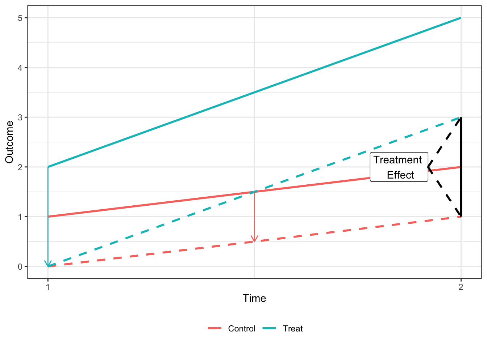
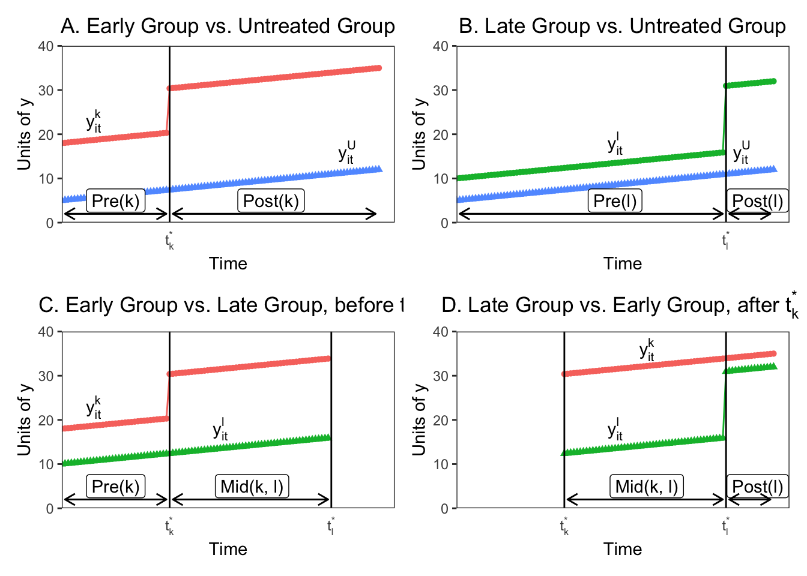

Difference-in-Differences Methodology
Short blogpost summarizing key attributes of the new difference-in-differences literature
Introduction
In this methodological section I will explain the issues with difference-in-differences (DiD) designs when there are multiple units and more than two time periods, and also the particular issues that arise when the treatment is conducted at staggered periods in time.
In the canonical DiD set-up (e.g. the Card and Kreuger minimum wage study comparing New Jersey and Pennsylvania) there are two units and two time periods, with one of the units being treated in the second period. Graphically, you can think of the relationship as the one presented below:
Under the parallel trends assumption that, ceteris paribus, the two units would have the same change in the outcome variable, the treatment effect is equal to the difference in the outcome variable for the treated unit in period 2 (\(Y_2^T\)) and the treated unit in period 1 (\(Y_1^T\)), less the same difference in the control unit (\(Y_2^C - Y_1^C\)).

It can be easily shown that the treatment effect (hereafter \(\tau\)) shown in the above plot is equvalent to the coefficient on \(\delta\) from the regression \[\tag{1} Y_{it} = \gamma_t POST_t + \gamma_i TREAT_i + \delta POST_t \times TREAT_i + \epsilon_{it}\] where \(POST_t\) is an indicator for being in the second period and \(TREAT_i\) is an indicator for the treated unit.
Methodological Issues
Summary
While the 2x2 DiD treatment effect can easily be calculated in (1), most DiD applications exploit variation across groups and units that receive treatment at different points in time. The coefficient that comes from the two-way fixed effects (TWFE) estimator when there are more than two units and periods is not an easily interperable parameter in the same manner. Numerous papers have now documented that this coefficient is in fact a weighted average of many different treatment effects, and that these weights are often negative and non-intuitive.
For the purposes of explaining the methodological issue I will focus on one paper’s derivation - Goodman-Bacon (2019) [hereinafter GB (2019)] (Multiple papers have derived this result with varying terminology. I will go over the remedies proposed by some of these papers below). According to GB (2019), the general estimator from the TWFE approach is actually a “weighted average of all possible two-group/two-period DiD estimators in the data.”
Under the TWFE approach, researchers estimate the regression with dummies for cross-sectional units (\(\alpha_i\)) and time periods (\(\alpha_t\)) and a treatment dummy (\(D_{it}\)). The POST and TREAT variables are thus subsumed by the fixed effects structure. This regression is generally written as:
\[ \tag{2} y_{it} = \alpha_i + \alpha_t + \beta^{DD} D_{it} + \epsilon_{it} \]
As explained in GB (2019), we know relatively little about what the TWFE DiD value (\(\beta^{DD}\)) measures when treatment timing varies, including how it compares mean outcomes across groups and when alternative specifications will work or why they change the estimates. What the GB (2019) derivation shows is that we can think of the TWFE estimator as a weighted average of individual 2x2 DiD estimators, with the weights proportional to group sizes and the variance of the treatment indicators in each pair, which is highest for units treated in the middle of the panel. In addition, GB (2019) shows how some of the 2x2 estimators use units treated at a particular time as the treatment group and never-treated units as a control group, while other use units treated at two different times, with later-treated groups being used as a control before treatment begins, and the earlier-treated group being used as control after its treatment begins.
Furthermore, GB (2019) shows that when the treatment effects do not change over time, \(\beta^{DD}\) is the variance-weighted average of cross-group treatment effects, and all of the weights are positive. However, when the treatment effect does vary across time, some of these 2x2 estimates enter the average with negative weights. This is because already-treated units act as controls, and changes in a portion of their treatment effects over time are subtracted from the DiD estimate.
Derivation
Assume going forward that we have a balanced panel data set with \(T\) periods \(t\) and \(N\) cross-sectional units \(i\) that belong to either an untreated group \(U\), an early treatment group \(k\) which receives binary treatment at \(t_k^*\), and late treatment group \(l\) that receives a binary treatment at \(t_l^* > t_k^*\). For each group \(a\), it’s sample share is \(n_a\) and the share of time it spends treated is \(\overline{D}_a\). Denote \(\overline{y}_b^{POST(a)}\) to be the sample mean of \(y_{it}\) for units in group \(b\) during group \(a\)’s post period \([t_a^*, T]\), with \(\overline{y}_b^{PRE(a)}\) defined similarly.
First, I’ll replicate the figure from GB (2019) that shows how \(\beta^{DD}\) is calculated when there are just the three groups described above - \(U\), \(k\), and \(t\). Here \(U\) is never treated, \(k\) the early treatment group is treated at \(t_k^* = \frac{34}{100} T\) and the late treatment group \(l\) receives treatment at \(t_l^* = \frac{85}{100}T\). We denote three sub-periods, the pre-period for group \(k\) = \(PRE(k) = [0, t_k^* - 1]\), the middle period when group \(k\) is treated but group \(l\) is not \(MID(k, l) = [t_k^*, t_l^* - 1]\), and the post-period for group \(l\) = \(POST(l) = [t_l^*, T]\). We assume that the treatment effect is equal to 10 for group \(k\) and 15 for group \(l\).
As GB (2019) note, the challenge is to show how the estimates from the TWFE estimation in Equation 2 map to the groups and times depicted in the figure above. GB (2019) shows that in the three group case here, we could form four 2x2 DiDs that can be estimated by Equation 1 on the subsamples of groups and times. I demonstrate the four possible 2x2 designs in the figure below.

In Panels A and B we see that if we consider only one treatment group and the untreated group, the two way fixed effects estimate reduces to the standard 2x2 DiD with the estimate equal to: \[\hat{\beta}_{jU}^{2x2} = \left(\overline{y}_j^{POST(j)} - \overline{y}_j^{PRE(j)} \right) - \left(\overline{y}_U^{POST(j)} - \overline{y}_U^{PRE(J)} \right), j = k, l \] However, if there are no untreated units in the sample, the TWFE estimator is only estimated by the difference in the timing of the treatments between treatment groups. This is represented in Panel C, where before \(t_l^{*}\), the early unit \(k\) acts as the treatment group and the later treated unit \(l\) acts as a control. The 2x2 DiD estimator compares the differences in outcome between the window when treatment status varies (\(MID(k, l)\)) and the early group’s pre-period (\(PRE(k)\)):
\[ \hat{\beta}_{kl}^{2x2, k} = \left(\overline{y}_k^{MID(k, l)} - \overline{y}_k^{PRE(k)} \right) - \left(\overline{y}_l^{MID(k, l)} - \overline{y}_l^{PRE(k)} \right) \] Panel D shows the opposite situation, where the later group changes treatment after \(t_l^{*}\) and the earlier treated unit \(k\) acts as the control. Again, the 2x2 compares average outcomes between two periods, here \(POST(l)\) and \(MID(k, l)\):
\[ \hat{\beta}_{k, l}^{2x2, l} = \left(\overline{y}_l^{POST(l)} - \overline{y}_l^{MID(k, l)} \right) - \left(\overline{y}_k^{POST(l)} - \overline{y}_k^{MID(k, l)} \right) \]
What’s important to note here is that the already-treated unit \(k\) acts as a control even though they are treated, because their treatment assignment indicator does not change over the relevant period. In addition, each one of the four 2x2 estimates in the figure above uses only a fraction of the available data. The DiDs with treated and untreated units use the entire time period, but only for the two respective groups, so their sample shares are (\(n_k + n_U\)) and (\(n_l + n_U\)). The timing indicator DiDs (Panels C and D) also use only the observations from the two groups, but also use only a portion of the available time periods. \(\hat{\beta}_{k,l}^{2x2, k}\) only uses group \(l\)’s pre-period, so it’s sample share is \((n_k + n_l)(1 - \overline{D}_l)\), while \(\hat{\beta}_{kl}^{2x2, l}\) uses group k’s post-period, so it’s share is \((n_k + n_l)\overline{D}_k\).
In addition, each of the 2x2 DiDs are identified by the treatment indicator variation in the subsample over which it is estimated, and this varies by subsample:
\[\widehat{V}_{jU}^D = n_{jU}(1 - n_{JU})\overline{D}_j(1 - \overline{D}_j), \hspace{0.5cm} j = k, l\]
\[\widehat{V}_{kl}^{D, k} = n_{kl}(1 - n_{kl}) \frac{\overline{D}_k - \overline{D}_l}{1 - \overline{D}_l} \frac{1 - \overline{D}_k}{1 - \overline{D}_l}\]
\[\widehat{V}_{kl}^{D, l} = n_{kl}(1 - n_{kl}) \frac{\overline{D}_l}{\overline{D}_k} \frac{\overline{D}_k - \overline{D}_l}{\overline{D}_k}\]
where \(n_{ab} \equiv \frac{n_a}{n_a + n_b}\) is the relative size of groups within each comparison group. The first portion of each variance measure is the concentration, or total size of the groups, while the second portion comes from when the treatment occurs in each sample, and is the variance of the treatment indicator variable scaled by the size of the relevant window. The central result from GB (2019) is that any TWFE estimator is just an average of the 2x2 estimators in Panels A-D, with weights that are based on subsample shares \(n\) and variances \(\hat{V}\).
With \(K\) timing groups, you can form \(K^2 - K\) timing only estimates comparing earlier and later treated groups. With an untreated group \(U\) you could form \(K\) treated/untreated 2x2 DiDs for a total of \(K^2\) DiD estimates. The weights on each of these 2x2 estimates used to construct \(\beta^{DD}\) combine the absolute size of the subsample, the relative size of the treatment and control groups in the subsample, and the timing of the treatment in the subsample.
To put this in context, we can derive the weights for \(\beta^{DD}\) from the example in the figures above. \(t_k^*\) and \(t_l^*\) were set so that \(\overline{D}_k = 0.66\) and \(\overline{D}_l = 0.16\). For the 2x2 DiDs in Panels A and B the weights given to the 2x2 DiD estimate for the earlier treated group, \(s_{kU}\) is greater than the weight given to the DiD for the later-treated group, \(s_{lU}\) because \(k\) is treated closer to the middle of the panel and has a higher treatment-indicator variance. This is also true for the timing-only 2x2 DiD’s (Panels C and D), where the weights are higher for the earlier treated groups both because it uses more data and because it has a higher treatment variance. If we calculate the weights for our four estimates here we get:
| weights | value |
|---|---|
| $s_{kU}$ | 0.37 |
| $s_{lU}$ | 0.22 |
| $s_{kl}^k$ | 0.28 |
| $s_{kl}^l$ | 0.13 |
What is clear from the derivation is that panel length alone can change the DiD estimates substantially, even when each 2x2 DiD estimate is constant. This seems normatively undesirable. In addition, the weights assigned to each 2x2 estimate when aggregating through TWFE OLS are a result of the size of the subsample and the magnitude of the treatment variance. Groups treated closer to the middle of the panel get more weight, which again isn’t intuitively desirable.
Identifying Assumptions
The above derivation of the mechanics of TWFE DiD explains how the coefficient is calculated, but doesn’t map the estimates and the weighting to the standard potential outcomes framework for causal inference. GB (2019) follows Callaway and Sant’Anna (2018) and defines the average treatment effect on the treated (ATT) for timing groups \(k\) (all firms that receive treatment during a certain period) at time \(\tau\) (the “group-time average treatment effect”) as \[ATT_k(\tau) \equiv E[Y_{i\tau}^1 - Y_{i\tau}^0|k]\] The TWFE DiD averages outcomes in pre- and post-periods, so we can re-define the average \(ATT_k(\tau)\) in a date range \(W\) with \(T_W\) periods: \[ATT_k(W) \equiv \frac{1}{T_W} \sum_{t \in W} E[Y_{it}^1 - Y_{it}^0 | k]\].
I won’t re-derive the full potential outcome results from GB (2019), but the main result is that you can decompose his DiD theorem to express the probability limit of the TWFE DiD estimator \(\beta^{DD}\) (assuming \(T\) is fixed and \(N\) grows) as \[\underset{N \rightarrow \infty}{plim} \hat{\beta}^{DD} = VWATT + VWCT - \Delta ATT\] In this equation VWATT is the “variance-weighted average treatment effect on the treated”, and is just the positively weighted average of ATTs for the units and periods that act as treatment groups across the 2x2 estimates that make up \(\beta^{DD}\), as we derived in the earlier 3-unit example.
VWCT is the “variance-weighted common trend” term, which generalizes the common trend assumption of DiD to a setting with timing variation. VWCT is the average of the difference in counterfactural trends between pairs of groups and different time periods using the weights from the previous decomposition, and captures how differential trends map to bias in the \(\hat{\beta}^{DD}\) estimate. Essentially, this captures the fact that different groups might not have the same underlying trend in outcome dynamics, which biases the (really any) DiD estimate.
Finally, the last term \(\Delta ATT\) is a weighted sum of the change in treatment effects within each unit’s post-period with respect to another unit’s treatment timing. This term enters the coefficient estimate because already-treated groups act as controls for later-treated groups, and thus the 2x2 estimators (which subtract changes in the control units from changes in the treated units) will subtract both the average change in untreated outcomes and the treatment effect from earlier periods, assuming that the treatment effect takes more than one period to resolve. This can represent a substantial bias in the estimate.
When the treatment effect is constant in every period, then \(ATT_k(W) = ATT, \Delta ATT = 0,\) and \(VWATT = ATT\). Any justification for DiD over other approaches, such as generalized synthetic controls or matrix completion, implicitly assumes that \(VWCT = 0\), or that the parallel trends assumption is satisfied. Bias will arise in \(\beta^{DD}\) generally under two forms of treatment effect heterogeneity. First, you can have effects that vary across units, but not over time. [NOTE, I WAS CONFUSED BY THIS EARLIER. IT’S NOT THAT THE TREATMENT EFFECTS ARE CONSTANT ACROSS COHORTS BUT THAT THE TREATMENT EFFECT IS CONSTANT EVERY PERIOD FOR A GIVEN UNIT] In this case \(\Delta ATT = 0\) and \(ATT_k(W) = VWATT = \sum_{k \neq U} ATT_k \times w_k^T\). Here \(w_k^T\) is a function of the decomposition weights, and is a combination of sample shares and treatment variance. In general \(w_k^T \neq n_k^*\). In other words, the weights are not equal to the sample shares, so \(\hat{\beta}^{DD}\) will not equal the sample ATT. As explained in GB (2019), because TWFE uses OLS to combine 2x2 DiDs efficiently, the VWATT lies along the bias/variance tradeoff, and the weights deliver efficiency by potentially moving the point estimate away from the sample ATT. Again, the VWATT will give more weight to units treated towards the middle of the panel, so if the treatment effects during that period differ materially from other treatment effects, the coefficient could be biased.
In addition, we could have a circumstance where the treatment effect is time-varying within a treated unit. That is, instead of a constant additive effect (after treatment \(Y = Y + \tau\)), there are dynamics to the treatment effect which increase or decrease as time passes. This is likely to be common; when you see “event study” DiD estimates, the post-treatment period usually shows post-treatment trends in the estimated effects. In this case, time-varying treatment effects generate heterogeneity across the 2x2 DiDs by averaging over different post-treatment windows, up-weighting short run effects most likely to appear in the small windows between timing groups, and biasing the estimates away from the VWATT because \(\Delta ATT \neq 0\). If treatment causes a trend-shift or other form of time-varying treatment effect, then \(\beta^{DD}\) will use already-treated units as controls and will yield estimates that are too small or even wrong-signed.
Remedies
In this section I will briefly review some of the proposals put forward by different authors on how to deal with the weighting and bias issues inherent to the TWFE DiD estimate \(\beta^{DD}\).
Goodman-Bacon (2019)
GB (2019) proposes a series of diagnostic tests to examine the robustness of the TWFE DiD estimate. First, given the decomposition of the individual 2x2 DiD weights, GB (2019) proposes a more effective balancing test for staggered DiD. Existing approaches for evaluating the balance in a timing design involve estimating a linear relationship between a confounded \(x_{it}\) and the treatment timing \(t_k^*\), or comparing means between early and late treated groups. However, because control groups include both early and late-treated units, this does not test whether any such imbalance is likely to bias \(\beta^{DD}\). Rather, GB (2019) proposes a single t-test of reweighted balance in \(x_{it}\), which is a proxy for whether \(VWCT = 0\):
Generate a dummy for whether a unit is an “effective treatment group”, i.e. whether a unit’s weight as a treatment group exceeds its weight as a control group, \(B_k = w_k^T - w_k^C \geq 0\).
Regressing timing-group means, \(\overline{x}_k\) on \(B_k\), weighting by \(\left|w_k^T - w_k^C\right|\).
The coefficient on \(B_k\) then equals the covariate diferences weighted by the actual identifying variation, and the \(t\)-statistic tests against the null of no imbalance. You could also test for trends in the confounders by interacting year dummies or a linear trend with \(B_k\).
In addition, GB (2019) shows how to test the stability of the DiD coefficients by plotting each 2x2 DiD against its weight \(w_k^*\). You can calculate a variety of different conditional expectations over the subgroups, including the average effect and total weights for treated/untreated comparisons, and late/early treatment and early/late treatment comparisons. Adding the weights on the timing-based coefficients from the decomposition show how much of \(\beta^{DD}\) comes from timing variation. Finally, you can identify influential observations by comparing the weights, and calculate what percentage of the total 2x2 coefficients drive 50% of the estimate, or whether influential observations have substantially different levels of \(\tau\).
Callaway and Sant’Anna (2018)
Callaway and Sant’Anna (2018) [hereinafter CS (2018)] also consider the identification and estimation of treatment effect parameters using DiD with multiple time periods, variation in treatment timing, and where the parallel trends assumption may only hold after conditioning on observables. They propose a two-step estimation strategy with a bootstrap procedure to conduct asymptotically valid inference which can adjust for autocorrelation and clustering.
CS (2018) define the causal parameters of interest in a staggered DiD framework as functionals of the ATE for group \(g\) at time \(t\), where a group is defined by when units are first treated (e.g. all firms treated in 2006, 2009, etc.). These causal parameters are called “group-time average treatment effects”. This setting allows you to aggregate the treatment effects by either relative time (i.e. the event study approach) or by calendar time.
To keep the same notation as in CS (2018), assume there are \(\mathcal{T}\) periods where \(t = 1, \ldots, \mathcal{T}\), with \(D_t\) a binary variable equal to 1 if an individual is treated and 0 otherwise. In addition, define \(G_g\) to be a binary variable that is equal to 1 when an individual is first treated in period \(g\), and \(C\) as a binary variable equal to 1 for never-treated units. For each unit, exactly one of \(G_g\) or \(C\) is equal to 1. Denote the generalized propensity score as \(p_g(X) = P(G_g = 1 | X, G_g + C = 1)\), which is the probability that an individual is treated conditional on having covariates \(X\) and conditional on being a member of a group \(g\) or a control group \(C\).
CS (2018) frames its identification strategy within the potential outcomes framework. Let \(Y_t(1)\) and \(Y_t(0)\) be the potential outcomes at time \(t\) with and without treatment, respectively. The observed outcome in each period can thus be expressed as \(Y_t = D_t Y_t(1) + (1 - D_t)Y_t(0)\). The authors focus on the average treatment effect for individuals first treated in period \(g\) at time period \(t\), called the group-time average treatment effect, denoted by: \[ATT(g, t) = \mathbb{E}[Y_t(1) - Y_t(0) | G_g = 1]\] The assumptions in the CS (2018) framework are of random sampling, parallel trends conditional on covariates, irreversability of treatment (after a unit is treated it is treated for the remainder of the panel), and overlap (the propensity scores are greater than 0 and less than 1).
Given the parameter of interet \(ATT(g, t)\), CS (2018) develop a non-parametric identification strategy for the group-time average treatment effect, which allows for treatment effect heterogeneity and does not make functional form assumptions about the evolution of potential outcomes. Under the assumptions above, the group-time average treatment effect is nonparametrically identified as: \[ATT(g, t) = \mathbb{E} \left[\left( \frac{G_g}{\mathbb{E}[G_g]} - \frac{\frac{p_g(X)C}{1 - p_g(X)}}{\mathbb{E}\left[\frac{p_g(X)C}{1 - p_g(X)} \right]} \right) \left(Y_t - T_{g - 1}\right)\right]\] This is just a simple weighted average of the “long difference” of the outcome variable, with the weights depending on the propensity score, which are normalized to one. The intuition is to take observations from the control group and group \(g\), omitting other groups, and then up-weight observations from the control group that have characteristics similar to those frequently found in group \(g\) and down-weight observations from the control group that are rarely in group \(g\). This reweighting ensures that the covariates of the treatment and control group are balanced. The authors also explain in an appendix how to use their reweighting scheme where future-treated units can be used as controls.
With \(ATT(g, t)\) in hand we can aggregate the group-time treatment effects into fewer intrepetable causal effect parameters, which makes interpretation easier, and also increases statistical power and reduces estimation uncertainty. CS (2018) propose doing the following:
Aggregating \(ATT(g, t)\) by timing-group, \(\tilde{\theta}_s(g) = \frac{1}{\mathcal{T} - g + 1} \sum_{t = 2}^{\mathcal{T}} 1 \{g \leq t\} ATT(g, t)\), and combining the group average treatment effect by the size of each group \(\theta_s = \sum_{g = 2}^{\mathcal{T}}\tilde{\theta}_s(g) P(G = g)\).
Aggregating \(ATT(g, t)\) by the length of exposure to treatment (denoted \(e\)) to test whether there are dynamic treatment effects (i.e. the treatment effect is explicitly a function of the time since treatment). They consider \(\tilde{\theta}_D(e) = \sum_{g = 2}^{\mathcal{T}} \sum_{t = 2}^{\mathcal{T}} 1 \{t - g + 1 = e\} ATT(g, t)P(G = g | t - g + 1 = e)\). Here \(\tilde{\theta}_D(1)\) would be equal to the average (based on group size) treatment effect in one (\(e = 1\)) period. This aggregation gives you a properly weighted event-study similar to pre-existing practice, which might be desirable for continuity. In addition, you could then average over all possible values of \(e\) to get \(\theta_D = \frac{1}{\mathcal{T} - 1} \sum_{e = 1}^{\mathcal{T} - 1} \tilde{\theta}_D(e).\)
Aggregating \(ATT(g, t)\) by calendar time involves computing an average treatment effect for all individuals that are treated in period \(t\) and then averaging across all periods. Here, \(\tilde{\theta}_C(t) = \sum_{g = 2}^{\mathcal{T}} 1 \{g \leq t\} ATT(g, t) P(G = g | g \leq t)\). \(\tilde{\theta}_C(t)\) can be interepreted as the average treatment effect in period \(t\) for all groups treated by period \(t\), and you can further aggregate to \(\theta_C = \frac{1}{\mathcal{T} - 1} \sum_{t = 2}^{\mathcal{T}} \tilde{\theta}_C(t)\), which would be the average treatment effect when calendar time matters. This final summary statistic naturally puts the most weight on groups that are treated in the earliest periods, because they enter more of the \(ATT(g, t)\) estimates.
Aggregating \(ATT(g, t)\) in the case where the timing of treatment matters, and where there are dynamic treatment effects (probably the most likely reality in real world scenarios). Here CS (2018) considers dynamic treatment effects only for \(e \leq e^{'}\) and for groups with at least \(e^{'}\) periods of post-treatment data, which removes the impact of selective treatment timing by keeping the same set of groups across all values of \(e\). There is a tradeoff here between the amount of groups you have in your final estimation sample (larger with smaller values of \(e^{'}\)) and the length of the exposure that you can estimate (smaller with smaller values of \(e^{'}\)). Let \(\delta_{gt}(e, e^{'}) = 1\{t - g + 1 = e \}1\{T - g + 1 \geq e^{'}\}1\{e \leq e^{'}\}\). Thus \(\delta_{gt}(e, e^{'})\) is equal to one in the period where group \(g\) has been treated for exactly \(e\) periods, if group \(g\) has at least \(e^{'}\) post-treatment periods available, and if the length of exposure \(e\) is less than the post-treatment period requirement \(e^{'}\). The average treatment effect for groups in \(\delta_{gt}(e, e^{'})\) is given by \(\tilde{\theta}_{SD}(e, e^{'}) = \sum_{g = 2}^{\mathcal{T}} \sum_{t = 2}^{\mathcal{T}} \delta_{gt}(e, e^{'}) ATT(g, t)P(G = g | \delta_{gt}(e, e^{'}) = 1)\). With \(\tilde{\theta}_{SD}(e, e^{'})\) we can calculate the average treatment effect for groups with at least \(e^{'}\) periods of post-treatment data as \(\theta_{SD}(e^{'}) = \frac{1}{\mathcal{T} - e^{'}} \sum_{e = 1}^{\mathcal{T} - e^{'}} \tilde{\theta}_{SD}(e, e^{'})\).
Abraham and Sun (2019)
This paper is tightly linked with the Callaway and Sant’Anna paper, but focuses exclusively on the event-study context, where you include leads and lags of the treatment variable instead of a single binary indicator variable. The authors confirm that in the event study context, where the timing of treatment varies across units, lead/lag regressions can produce causally uninterpretable results because they assign non-convex weights to cohort-specific treatment effects. Their proposed method estimates the dynamic effect for each cohort (equivalent to group \(G_g\) from CS (2018)), and then calculates the average of cohort-specific estimates.
In the event study context, the TWFE regression with leads and lags of treatments takes the form of:
\[y_{it} = \alpha_i + \alpha_t + \sum_{l = -K}^{-2} \beta_l D_{it}^l + \sum_{l = 0}^L \beta_l D_it^l + \epsilon_{it}\].
where \(D_{it}^l\) is an indicator for being \(l\) time periods relative to \(i\)’s initial treatment (treatment is \(l\) = 0), and \(\alpha_i\) and \(\alpha_t\) are unit and time fixed effects, as before. AS (2019) focus on the “cohort-specific average treatment effects on the treated” \(l\) periods from initial treatment. This is denoted \(CATT_{el} = E\left[Y_{i, e + l}^e - Y_{i, e + l}^{\infty} | E_i = e \right]\) where \(E_i\) is the time period of initial treatment, and a cohort \(e\) is a set of units for which \(E_i = e\); \(Y_{it}^{\infty}\) is the counterfactual outcome of unit \(i\) if it never received treatment.
The key theoretical result in this paper is that, even when doing an event-study estimation technique rather than a single binary indicator variable, the coefficients on the TWFE lead/lag indicators could be biased, because the weights assigned to the different \(CATT\)s are hard to interpret and need not be positive without assuming treatment effect homogeneity. Specifically, the FE estimands for \(l\) periods relative to treatment can be written as non-convex averages of not only \(CATT_{e, l}\) from that period, but also \(CATT_{e, l^{'}}\) from other periods. This is similar to the result in \(GB (2019)\) that \(\Delta ATT \neq 0\) with dynamic treatment effects, although (I believe) the event study framework does solve some of the odd variance-weighted issues brought up by GB (2019) in the binary indicator context.
The proposed alternative estimation technique in AS (2019) is to use an interacted specification that is saturated in relative time indicators \(D_{it}^l\) and cohort indicators \(1\{E_i = e\}\) to estimate each \(CATT_{el}\), which they call an “interaction-weighted” (IW) estimator. The DiD under the IW estimator is equivalent to the difference between the average change in outcomes for cohort \(e\), which is exactly \(l\) periods relative to treatment, and the average change for cohorts that have not been treated by \(t = e + l\) and is estimated simply by \[Y_{it} = \alpha_i + \alpha_t + \sum_e \sum_{l \neq -1} \delta_{el}(1\{E_i = e\} \cdot D_{it}^l) + \epsilon_{it}\] Finally, you can re-create the standard event-study plots by taking the weighted average over cohorts \(e\) for time period \(l\), with the weights equal to the share of each cohort in the relevant periods.
Imai and Kim (2019)
Imai and Kim (2019) [hereinafter IK (2019)] also consider the impact of TWFE on DiD estimates with multiple periods, and where units can switch in and out of treatment at different periods in time (this is different than, for example, CS (2018) which assumes treatment continues for the rest of the panel). IK (2019) uses a matching framework to propose a multi-period DiD estimator which eliminates the bias in the TWFE estimator. Their matching estimator is equivalent to a weighted two-way fixed effects regression estimator.
Define a within-unit matched set as the group containing the observation of a treated unit from the previous time period if it is under the control condition (treat = \(X_{it}\) = 0) and to be an empty set otherwise: \[\mathcal{M}_{it} = \{(i^{'}, t^{'}) : i^{'} = i, t^{'} = t - 1, X_{i^{'}t^{'}} = 0\}\] The within-time matched set is defined as a group of control observations in the same time period whose prior observations are also under the control condition: \[\mathcal{N}_{it} = \{(i^{'}, t^{'}) : i^{'} \neq i, t^{'} = t, X_{i^{'}t^{'}} = X_{i^{'}, t^{'} - 1} \}\] And the adjusted set, which contains the control observations in the previous period that share the same unit as those in \(\mathcal{N}_{it}\): \[ \mathcal{A}_{it} = \{(i^{'}, t^{'}) : i^{'} \neq i, t^{'} = t - 1, X_{i^{'}t^{'}} = X_{i^{'}t} = 0 \} \]
With these matched sets and adjustment sets, the multi-period DiD estimator is the average of 2x2 DiD estimators applied whenever there is a change from the control condition to the treatment condition (Note, I believe this methodology just looks at one-period effects, so rules out dynamic treatment effects). Then the treatment effect is \[\hat{\tau} = \frac{1}{\sum_{i = 1}^N \sum_{t = 1}^T D_{it}} \sum_{i = 1}^N \sum_{t = 1}^T D_{it} \left(\widehat{Y_{it(1)}} - \widehat{Y_{it(0)}} \right)\] where \(D_{i1} = 0 \forall i\), \(D_{it} = X_{it} \cdot 1\{|\mathcal{M}_{it}| \cdot |\mathcal{N}_{it}| > 0\}\) for \(t > 1\) and for \(D_{it} = 1\) we define:
\[\begin{equation} \widehat{Y_{it}(x)} = \left\{ \begin{array} YY_{it} & \text{if } X_{it} = 1 \\ Y_{i, t- 1} + \frac{1}{|\mathcal{N}_{it}|} \sum_{(i^{'}, t) \in \mathcal{N}_{it}} Y_{i^{'}t} - \frac{1}{|\mathcal{A}_{it}|} \sum_{(i^{'}, t^{'}) \in \mathcal{A}_{it}} Y_{i^{'}t^{'}} & \text{if } X_{it} = 0 \end{array} \right. \end{equation}\]
In words, this means that when the treatment status of a unit changes from a control (\(X_{it} = 0\)) at time \(t-1\) to a treatment (\(X_{it} = 1\)) at time \(t\), and there exists at least one other unit whose treatment status does not change in the same time periods, the counterfactual outcome for observation \((i, t)\) is estimated by substracting from the realized outcome \(Y_{it}\), its own observed previous period outcome \(Y_{i, t-1}\), as well as the average outcome difference between the same two time periods among the other units whose treatment status does not turn on in time \(t\).
With these sets and estimation strategy, the IK (2019) matching based DiD estimator is equivalent to the following weighted two-way fixed effect estimator:
\[\hat{\tau} = \hat{\beta}_{WFE2} = \underset{\beta}{\text{armin}} \sum_{i = 1}^N \sum_{t = 1}^T W_{it}\{(Y_{it} - \overline{Y}_i^* - \overline{Y}_t^* + \overline{Y}^*) - \beta(X_{it} - \overline{X}_i^* - \overline{X}_t^* + \overline{X}^*) \}^2 \] where asterisks indicate weighted averages and the weights \(W_{it}\) are given by:
\[W_{it} = \sum_{i^{'} = 1}^N \sum_{t^{'} - 1}^T D_{i^{'}t^{'}} \cdot w_{it}^{i^{'}t^{'}}\] and
\[\begin{equation} w_{it}^{i^{'}t^{'}} = \left\{ \begin{array} 11 & \text{if } (i, t) = (i^{'}, t^{'}) \\ 1 / |\mathcal{M}_{i^{'}t^{'}}| & \text{if } (i, t) \in \mathcal{M}_{i^{'}t^{'}} \\ 1 / |\mathcal{N}_{i^{'}t^{'}}| & \text{if } (i, t) \in \mathcal{N}_{i^{'}t^{'}} \\ (2 X_{it} - 1)(2X_{i^{'}t^{'}}) / |\mathcal{A}_{i^{'}t^{'}} & \text{if } (i, t) \in \mathcal{A}_{i^{'}t^{'}} \\ 0 & \text{otherwise} \end{array} \right. \end{equation}\]
Cengiz, Dube, Lindner, and Zipperer (2019)
CDLZ (2019) estimates the impact of minimum wage changes on low-wage jobs across a series of 138 prominent state-level minimum wage changes between 1979 and 2016 in the United States using a difference-in-differences approach. In Online Appendix D, CDLZ (2019) notes that there are issues in aggregating discrete DiD estimates through OLS, and as a robustness check seperates and plots the distribution of the individual treatment effect for each of the events.
To do this, the authors create 138 event \(h\)-specific datasets including the outcome variable and controls for the treated state \(h\) and all other “clean controls” that don’t have a material change to the state minimum wage within the eight year estimation window (\(t = -3\) to \(t = 4\)). For each event, they they then run a one-treated panel DiD based on their baseline strategy:
\[ Y_{sjth} = \sum_{\tau = -3}^4 \sum_{k = -4}^4 \alpha_{\tau k h} \mathcal{I}_{sjth}^{\tau k} + \mu_{sjh} + \rho_{sjth} + u_{sjth} \] I will ignore the specific subscripts on all the regression terms; in essence this is just a saturated panel DiD with a lead/lag treatment indicator \(\mathcal{I}\) and state \(\mu\) and time \(\rho\) fixed effects.1 CDLZ (2019) then plots the distribution of the \(\alpha\) treatment effects, along with their confidence intervals using the Ferman and Pinto (forthcoming) method for heteroskedastic robust cluster residual bootstrapping more appropriate for single-treated units.
CDLZ (2019) also stacks the event-specific data sets to calculate an average effect across all 138 events using a single set of treatment effects. As the authors note, this is an alternative to a baseline TWFE DiD estimate, but “uses a more stringent criteria for admissable control groups, and is more robust to possible problems with a staggered treatment design in the presence of heterogeneous treatment effects.” By stacking and aligning events in event-time, this approach is equivalent to a setting where the events happen contemporaneously, and it prevents negative weighting of some events that may occur with a staggered design. Moreover, by dropping all control states with any state-level minimum wage increases within the 8 year event window, this method guards against bias due to heterogeneous treatment effects that show up in the \(\Delta ATT\) term from GB (2019).
Footnotes
The subscripts represent how the indicator and fixed effects are interacted with wage-bin indicators which is irrelevant for the purposes here.↩︎